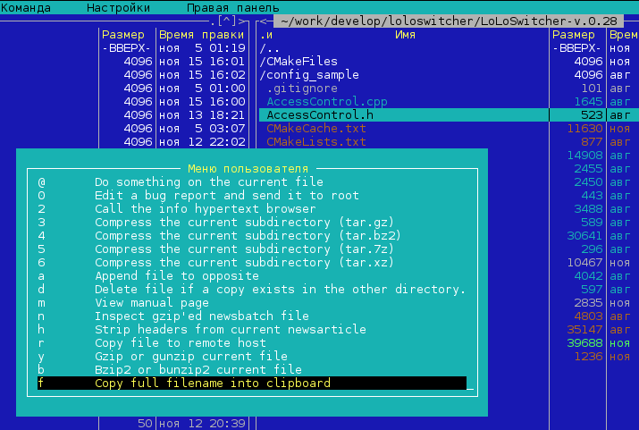

Чтобы иметь возможность скопировать в буфер обмена полный путь к выделенному файлу, можно сделать следующее: добавить самодельный пункт «Копировать полный путь текущего файла» в меню Midnight Commander.
То есть, надо добавить следующие строчки в файл ~/.mc/menu:
+ ! t t
f Copy full filename into clipboard
echo -n %d/%f | xclip -selection clipboard
Если такого файла нет, можно в меню MC выбрать "Команда" - "Редактировать файл меню" - "Пользовательский".
Да, чтобы этот пункт меню срабатывал, необходимо, чтобы в системе была установлена программа xclip.
После внесения изменений в файл меню, старые версии MC надо перезапустить, в новых версиях, как минимум в 4.8.x, изменения в меню применяются сразу после редактирования.
Как пользоваться этим новым пунктом меню? Наводим курсор на файл (т. е. просто наводим на файл "засветку"). Нажимаем F2, видим внизу наш новый пункт меню:

Если данное действие нужно производить постоянно, то можно нажимать последовательно клавиши [F2] и [F].